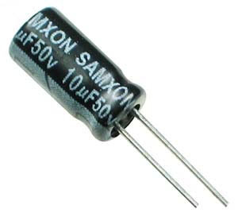
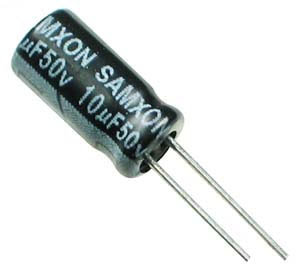

Build Your Sniffer
Gather Material
To build 1 device you will need:
1. An ATmega328 with Arduino bootloader 2. An ESP8266 NodeMCU Lua D1 Mini. Notes:
2. An ESP8266 NodeMCU Lua D1 Mini. Notes:
- Ask the seller for the MAC address or read the instruction below to get MAC address
- Ask the seller to solder the device as the image
 4. A LCD1602 (green or blue)
5. A LCD I2C module. Notes:
4. A LCD1602 (green or blue)
5. A LCD I2C module. Notes:
- Ask the seller what the address of I2C is (0x27 or 0x3F) - Ask the seller to solder the LCD and I2C module together
6. A Temperature and Humidity module (DHT11) (3 legs) 7. A Nova fitness SDS011 (PM sensor). Contact IoT club by email: aavn-iot-lab@axonactive.com to get this device
7. A Nova fitness SDS011 (PM sensor). Contact IoT club by email: aavn-iot-lab@axonactive.com to get this device
 8. 30 Male - Male jumper wire
8. 30 Male - Male jumper wire
 9. 15 Female - Male jumper wire
9. 15 Female - Male jumper wire
 10. A Push-Button
10. A Push-Button
 11. A Breadboard Mini 85 x 55 x 10 mm
12. An Adapter 5V - 1Amp (Connect with ESP8266 cable to provide electric power)
13. A Dual led (common cathode - )
11. A Breadboard Mini 85 x 55 x 10 mm
12. An Adapter 5V - 1Amp (Connect with ESP8266 cable to provide electric power)
13. A Dual led (common cathode - )
 14. A Plastic box to make the case (160 x 85 x 55 mm)
15. 3 Resistor - 220 Ohm
14. A Plastic box to make the case (160 x 85 x 55 mm)
15. 3 Resistor - 220 Ohm
 16. A Crystal - 16 MHz
17. 2 Ceramic capacitor - 22 pF
18. An Electrolytic capacitor - 10 uF (Long leg is the positive (+) lead, the shorter one is negative (-) lead)

19. An USB UART CP2102 (To upload source code for Atmega328. It is not included in final product.)
16. A Crystal - 16 MHz
17. 2 Ceramic capacitor - 22 pF
18. An Electrolytic capacitor - 10 uF (Long leg is the positive (+) lead, the shorter one is negative (-) lead)

19. An USB UART CP2102 (To upload source code for Atmega328. It is not included in final product.)